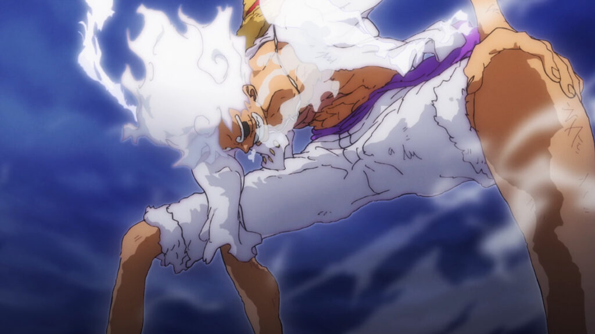

Luffy first used Gear Two against Blueno who was a CP9 agent. Gear Two allows its user to be faster since it speeds up the flow of the blood.
Luffy first used Gear Third on Rob Lucci who is the strongest CP9 member. Gear Three inflates a body part and enchances the strength of the user.
Luffy has three forms of Gear Four. He first used Gear Four: Bounceman when he was fighting the monsters on the island in which he got trained
by the right hand man of the former King of Pirates, Rayleigh. It was later used on Doflamingo in Dressrosa. Gear Four: Tankman is also
one of the forms of gear 4. He used it against Crackers in Whole Cake arc. Gear Four: Snakeman was also first used in Whole Cake arc when Luffy was fighting Katakuri.
Gear Five was first used on "The Strongest Creature" Kaido. Gear Five, Nika Man also known as the Joyboy, was shown to us in episode 1071. When all hope was lost, Luffy awakened his devil fruit which is the "Hito Hito No Mi, Model: Nika". Eiichiro Oda, the writer of One Piece stated that Mangas were getting very serious. He missed the old "Eye-popping Animation" and such. That's why he wanted Gear 5 to be "goofy". After all, the name is Joyboy, so he is supposed to bring joy to everyone. Gear Five is able to manipulate rubber on itself or its surroundings.